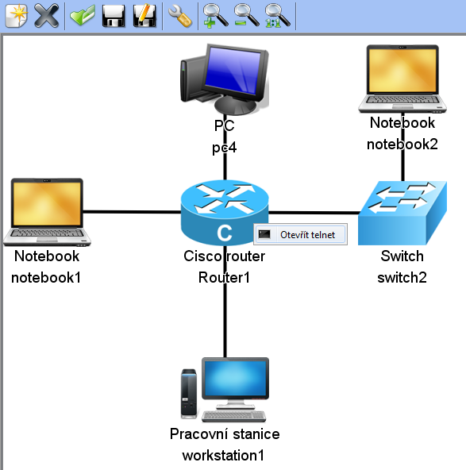
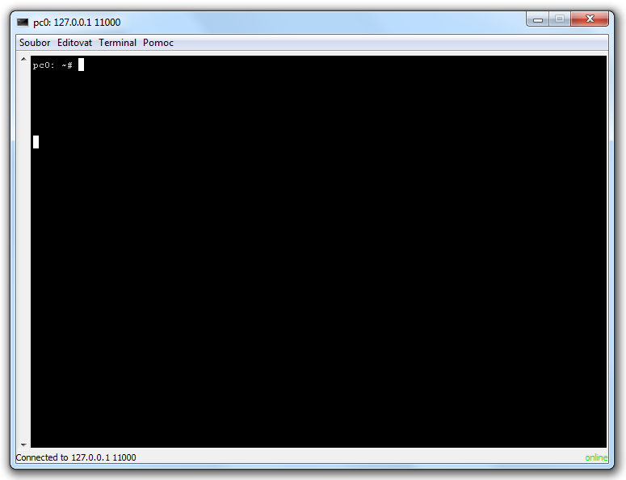

V simulačním režimu je možné připojení k telnetu s využitím přibaleného Swing Telnet klienta.
V simulačním režimu je přístup k jednotlivým virtuálním zařízením možný přes menu pod pravým tlačítkem myši na komponentě, jak ukazuje následující obrázek.
Na následujícím obrázku je vidět okno telnet klienta.
Další částí tutorialu je: Přidání nového jazyka.